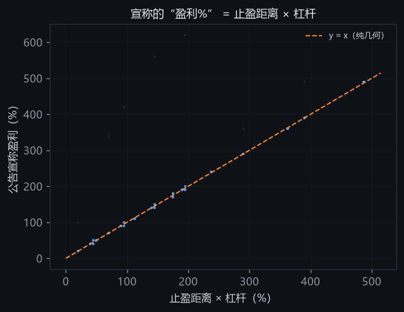
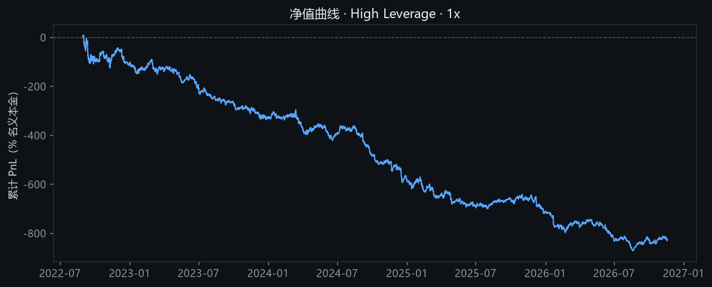
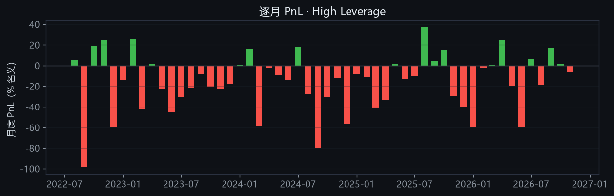
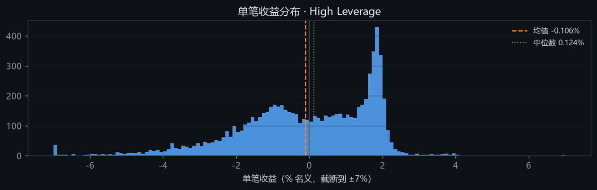
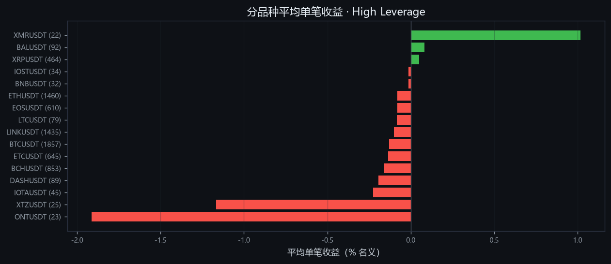
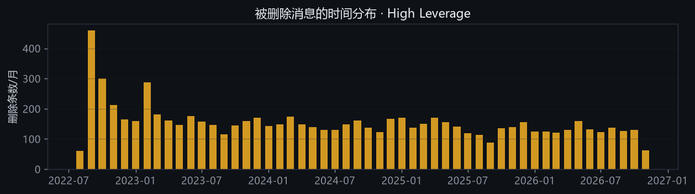
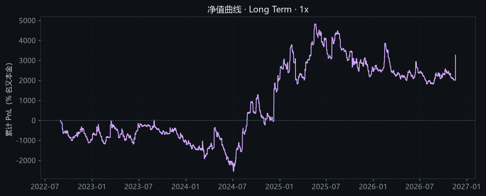
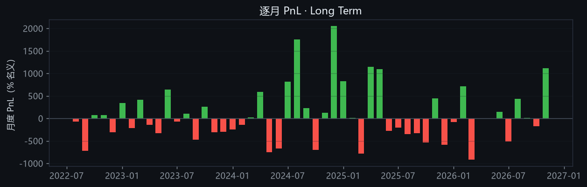
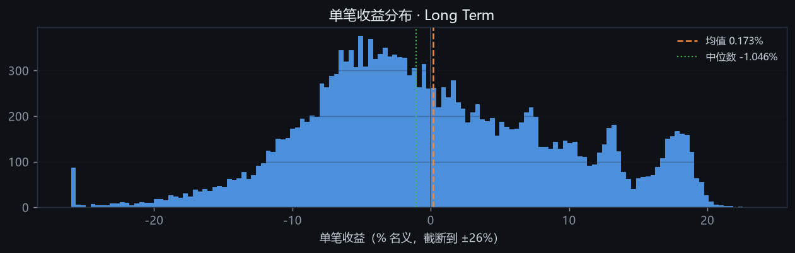

Telegram 频道全量历史（MTProto 直连抓取）· Binance USDⓈ-M 合约分钟级 K 线回放 · 2022-08 → 2026-11
两个频道是两种不同的失败方式。
Infinity Signals VIP 💎 High Leverage（7,788 笔）：每一年、每个方向都在亏。1 倍杠杆扣费后单笔 -0.106%，胜率 51.8% 看着还行，但盈亏比只有 0.87 —— 赚小钱、亏大钱。按它自己写的 50–125x 做，69% 的单子直接爆仓，单笔保证金平均 -23.4%。
Infinity Signals VIP 💎 Long Term（18,914 笔）：单笔均值 +0.173%（t=2.58，勉强算微弱正期望），但中位数是 -1.05%，全部利润来自最赚的那 1% 交易（贡献 114%）。按它写的 20x 做，61% 爆仓，单笔保证金平均 -2.0%。
| 频道 | 样本 | 胜率 | 单笔均值 | 单笔中位数 | 盈亏比 | 平均命中TP | 平均持仓 | 宣传杠杆下爆仓率 |
|---|---|---|---|---|---|---|---|---|
| High Leverage | 7,788 | 51.8% | -0.1064% | +0.1237% | 0.868 | 3.35 | 37h | 69% |
| Long Term | 18,914 | 45.6% | +0.1726% | -1.0463% | 1.048 | 2.27 | 199h | 61% |
| 频道 | 信号 | 消息总数 | 起始 | 结束 | 品种 | ID 空洞（被删） |
|---|---|---|---|---|---|---|
| High Leverage | 7,790 | 46,735 | 2022-08-29 | 2026-11-17 | 21 | 8,004 |
| Long Term | 19,219 | 101,573 | 2022-08-28 | 2026-11-17 | 166 | 19,454 |
Telegram 频道里消息 ID 严格连续，管理员每删一条就留下一个空洞。空洞数量 = 删掉的条数。
止盈阶梯是死的：TP1 距开仓价 0.40%、TP6 3.90%，四年没变过。止损位距开仓价中位数 50.15%，和杠杆无关——也就是说 50 倍杠杆配 50% 的止损，等于没有止损。他们自己那句 Use opposite signal as stop loss (Recommended) 才是唯一的真实规则：反向信号来了就翻仓。
于是“晒单”必然是漂亮的：

16,559 条盈利播报，与 (TP_n/Entry−1)×杠杆 的相关系数 0.9973。所谓 “Profit: 240% Target 4” 不是任何人的成交结果，是止盈档位距离乘杠杆的算术。
成交假设：信号后第一根 1 分钟 K 线开盘价市价成交（他们原话 Enter as soonest possible）、1bp 滑点、开/平 5bp taker、止盈 2bp maker；TP1–TP6 各减 1/6；剩余仓位在同品种下一条信号出现时平掉。同一根 K 线里止盈与反向同时出现时，按不利方向先成交。




四年累计 -828% 名义本金（每笔固定 1 单位）。平均同时持仓 9 个、峰值 25 个 —— 也就是说账户至少要能扛 25 个单位的名义敞口，而这条曲线累计亏掉 828 个单位、最大回撤 899 个单位：按这套规则交易，账户会在前 18 个月内被清空。
中位数 +0.124% 是正的、均值 -0.106% 是负的——这就是“胜率陷阱”：0.4% 的止盈很容易擦到，而反向翻仓那一下是不设防的。
| 杠杆 | 单笔均值（保证金） | 中位数（保证金） | 胜率 | 爆仓率 |
|---|---|---|---|---|
| 5x | -0.52% | +0.62% | 51.8% | 0.1% |
| 10x | -1.06% | +1.19% | 51.8% | 0.7% |
| 20x | -2.55% | +1.44% | 50.9% | 7.9% |
| 宣传杠杆 50–125x | -23.36% | -60.10% | 33.2% | 69.4% |
强平按逐分钟最高/最低价触发，维持保证金率 0.4%，单笔损失上限按 100% 保证金计。125 倍时维持保证金 0.4% + 初始保证金 0.8% ⇒ 反向 0.4% 就没了；而这个系统的止损在 −50% 之外。换句话说：它宣传的杠杆和它自己的风控是互相矛盾的。
| 口径 | 样本 | 胜率 | 单笔均值 | 中位数 | 盈亏比 |
|---|---|---|---|---|---|
| 市价进场 · 扣费 | 7,788 | 51.85% | -0.1064% | +0.1237% | 0.868 |
| 市价进场 · 零成本（毛） | 7,789 | 53.42% | -0.0109% | +0.2212% | 0.986 |
| 限价挂他们的入场价 | 7,586 | 50.37% | -0.1656% | +0.0249% | 0.809 |
方向镜像零模型。把每条信号的方向随机翻转（止盈阶梯跟着镜像，几何完全一致），时间、品种、翻仓节奏都不变，跑 8 组。真实流单笔 -0.0109%，随机流 +0.0135% ± 0.0150%——真实流只赢过 12% 的随机流。也就是：方向本身没有信息量，盈亏几乎完全由“0.4% 阶梯 + 反向翻仓”这套几何决定。换句话说，你看的不是一个“分析”，是一个固定赔率的机械系统，而这个赔率是负的。
限价进场更差（-0.166% vs 市价的 -0.106%）：说明价格很少回来给你挂单，回来的都是已经走坏的行情——典型的逆向选择。
High Leverage 缺 8,004 条（14.6%），Long Term 缺 19,454 条。删帖是持续的，不是偶尔清理。

把每条被删消息的 ID 映射回它前面那条消息的类型，能看出他们偏爱删什么：
| 被删消息的前一条是什么 | 占比 | 该类型在全部消息中的占比 |
|---|---|---|
| CANCEL | 0.1% | 0.0% |
| CLOSE | 0.6% | 12.3% |
| FULL_CLOSE | 30.5% | 13.4% |
| OTHER | 14.9% | 11.0% |
| SIGNAL | 5.9% | 16.7% |
| TP_HIT | 48.1% | 46.5% |
被删消息里，紧跟在“平掉上一笔”公告之后的比例是整体的 2.3 倍。也就是：一笔交易刚被平掉，紧随其后的那条结算消息最容易被删——通常是这笔单子的最终结果播报。
这个频道不亏，但也谈不上能交易：单笔 +0.173%（t=2.58、自助法 95% 区间 +0.05%…+0.30%），中位数 -1.05%，最赚的 1% 交易贡献了 114% 的利润。平均持仓 199 小时，平均同时持仓 101 个品种（峰值 125），也就是说你得同时在 100 多个小币上分摊仓位——收益曲线长这样：



| 年份 | 笔数 | 单笔均值 | 单笔中位数 | 年度累计 |
|---|---|---|---|---|
| 2022 | 1,746 | -0.548% | -0.934% | -956% |
| 2023 | 4,733 | -0.014% | -0.742% | -65% |
| 2024 | 4,878 | +0.633% | -0.314% | +3087% |
| 2025 | 4,399 | +0.106% | -1.836% | +466% |
| 2026 | 3,158 | +0.232% | -1.984% | +733% |
还有 254 条信号（1.3%）报的入场价和当时的市场价差 5% 以上，根本没法成交——比如 ATOM 报 0.164，而当时 ATOM 是 11.5。这类单子已经剔出统计。按它宣传的 20x 做，61% 的仓位会被强平，单笔均值 -2.0% 保证金。
对 High Leverage 来说，买到的是一个赔率固定、且赔率为负的机械系统，外加一套把 0.4% 的止盈乘上杠杆写成 “Profit: 240%”的话术。它既没有止损（止损在 −50%），也没有可执行的优势（方向镜像测试通不过），唯一“有效”的部分是止盈阶梯制造出来的高胜率错觉。
如果你就是想拿它当信号源，唯一能活下来的用法是：只用 Long Term、仓位按 1x 折算、单笔风险上限 1% 账户、把 100 多个品种的并发控制住——即便这样，期望也只有每笔 +0.17%，扣掉你自己的滑点和资金占用，基本等于白干。
数据都在 data/ 里，逐笔可查；想换口径改 scripts/backtest.py 的参数重跑就行。
python scripts/scrape.py --channel\npython scripts/parse.py --channel \npython scripts/bulk.py --from-signals --interval 1m\npython scripts/backtest.py --channel --entry market --interval 1m\npython scripts/benchmark.py --channel --seeds 8\npython scripts/report.py